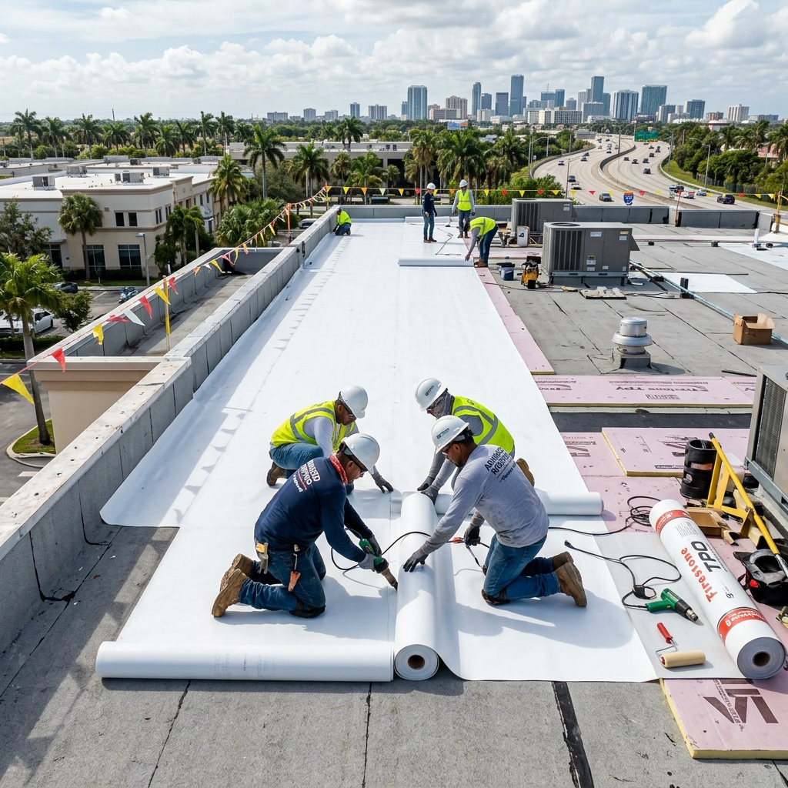

Modified bitumen roofing is a proven flat roofing system commonly specified for residential patio additions, commercial storefronts, and low-slope home extensions across South Florida. Designed as an evolutionary step beyond traditional built-up asphalt roofs, this system combines hot asphalt with chemical polymer modifiers to dramatically increase flexibility, structural strength, and waterproofing security. Selecting the right flat roofing material is essential to withstand South Florida's high volume of seasonal rainfall and protect structural decking from hidden water decay.

Understanding Modified Bitumen Material Properties
Modified bitumen membranes are engineered using specialized polymer modifiers that alter the natural characteristics of asphalt. SBS (Styrene-Butadiene-Styrene) adds synthetic rubber-like elasticity to the membrane, enabling it to stretch and contract easily as temperatures change. Conversely, APP (Atactic Polypropylene) imparts plastic-like qualities, which provide high UV resistance and elevated melting thresholds under intense sunlight. These materials are reinforced with tough fiberglass or polyester core mats, making the system highly resistant to structural tears, punctures, and pedestrian foot traffic.
Pros & Cons of Modified Bitumen Flat Roofing
When selecting a new flat roof assembly for your Broward County property, it is important to analyze the physical benefits and mechanical limitations of a modified bitumen system:
- Pros: Thick Multi-Ply Defense: Unlike thin, single-ply systems, modified bitumen uses two or three layers of membrane, providing redundant waterproof defense against structural punctures.
- Pros: Extremely Strong Seams: Fusing the seams together using heat welding or high-performance cold adhesives creates a highly reliable, leak-proof bond.
- Cons: Complex Heat Application: Traditional torch-applied systems involve open flames, which require specialized contractor safety standards to prevent structural fire hazards during installation.
- Cons: Vulnerability to Standing Water: If your flat roof has poor slope or blocked drains, standing water can gradually degrade the asphalt, leading to premature seam failure.
Wind & Heat Resistance Ratings
In Fort Lauderdale's High Velocity Hurricane Zone (HVHZ), wind uplift performance is critical. Multi-ply modified bitumen assemblies are engineered to withstand extreme negative wind pressures exceeding 120 psf, which equates to wind speeds of over 160 mph. For heat performance, raw asphalt naturally absorbs solar energy, raising attic temperatures. To mitigate this, manufacturers finish the sheets with highly reflective mineral granules or apply bright white silicone elastomeric coatings. This yields a Solar Reflectance Index (SRI) over 78, reflecting heat and protecting the underlying building from heavy thermal stress.
Warranty Considerations
The standard warranty coverage for modified bitumen flat roofing depends on the thickness and the number of layers installed. Single-ply configurations generally offer a ten-year material warranty, while premium two-ply and three-ply assemblies qualify for 20-year structural No Dollar Limit (NDL) manufacturer warranties. Because flat roof leaks almost always occur at critical flashing points, drains, and wall transitions, property owners should choose a manufacturer-certified contractor who can provide a combined material and workmanship warranty.
Maintenance & Cleaning Schedule
Because low-slope roofs do not benefit from gravity-assisted drainage, keeping a consistent maintenance schedule is vital to extend the system's lifespan and identify wear early:
- Bi-Annual Drain Audits (May & November): Clean leaves and dirt out of all scuppers, gutters, and internal drains to ensure heavy summer rains drain off the roof rapidly.
- Annual Seam Inspection: Have a certified professional inspect the overlaps and flashing along wall transitions to catch open seams before water penetrates the wood.
- Silicone Re-Coating (Every 5 to 7 Years): Applying a reflective elastomeric coating over the mineral granules reinforces waterproofing, seals hairline cracks, and restores solar reflectivity.
Need Modified Bitumen Roofing Help?
Ensure your South Florida flat roof is completely sealed and storm-ready. Planet Roofing provides expert inspections, customized repairs, and code-compliant replacements.
Call (954) 600-1462 or visit planetroofingfl.com to request an expert flat roof quote today.
Modified Bitumen FAQ
How much does a modified bitumen roof installation cost in Fort Lauderdale?
The cost to install a modified bitumen roofing system in South Florida typically ranges from $6,500 to $15,000, depending on the square footage, structural deck repairs, and drainage improvements. While it represents a larger upfront investment than single-ply systems, its thick, multi-ply design offers exceptional long-term value.
When is the most suitable time to replace a flat roof in Broward County?
The dry winter and spring months—specifically from December to April—are the most suitable times to replace your flat roof. Installing a flat system during this period avoids sudden afternoon downpours, which can compromise the dry substrate required to apply roofing adhesives or torch-applied membranes.
Is a professional installer required to apply torch-down flat roofing?
Yes. Applying torch-down modified bitumen requires specialized open-flame equipment and strict fire-safety protocols. DIY attempts present extreme safety hazards, risk structural fires, and will void the manufacturer's material warranty if the seams are not fused by a licensed contractor.
Does modified bitumen handle the intense heat of South Florida summers?
Yes. Polymer modifiers (APP and SBS) are specifically engineered to prevent the asphalt from softening under intense UV rays and high summer temperatures. Applying a reflective silicone coating over the mineral granules can further optimize heat resistance and lower cooling demands.
Why should you verify that your flat roofer holds a valid Florida roofing license?
Flat roofing systems have zero room for error; one poorly sealed seam can lead to hidden structural decay. A state-certified roofing contractor (holding a CCC license) understands local HVHZ drainage codes, carries correct commercial liability insurance, and guarantees code-compliant work that stands up to severe storms.